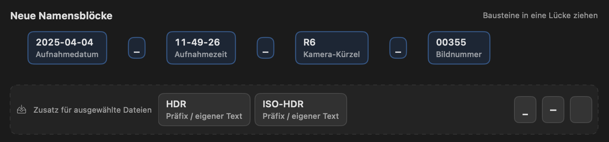
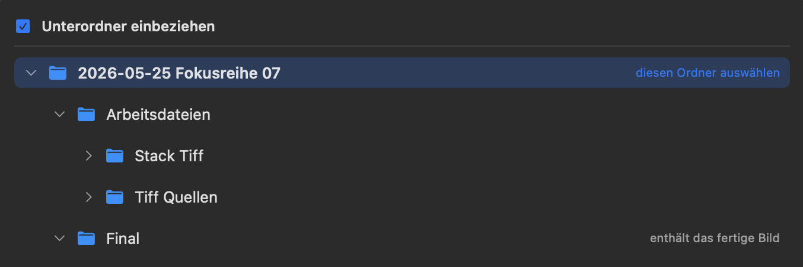

PhotoCaptureTime Benutzerhandbuch
Fotodateien aus ihren verlässlichen Bestandteilen neu benennen
Inhaltsverzeichnis
- Teil 1 · Einführung
- Teil 2 · Dateien vorbereiten
- Teil 3 · Namen zusammensetzen
- Teil 4 · Prüfen und umbenennen
- Teil 5 · Hilfe und Referenz
Teil 1 · Einführung
1.1 Über PhotoCaptureTime
PhotoCaptureTime benennt große Bildbestände einheitlich nach Aufnahmedatum, Aufnahmezeit, Kamera und Bildnummer. Die Vorschau zeigt für jede Datei den bisherigen und den geplanten Namen nebeneinander. Erst nach deiner Bestätigung werden Dateien auf dem Datenträger umbenannt.
Das besondere Prinzip
Die App arbeitet bewusst anders als „Suchen und Ersetzen“. Du bestimmst aus dem vorhandenen Namen den Zahlenblock, der als Bildnummer erhalten bleiben soll. Datum, Uhrzeit, Kamerakürzel, Trennzeichen und eigene Texte setzt PhotoCaptureTime anschließend neu zusammen.

Hinweis: Unregelmäßige Präfixe, Bearbeitungszusätze oder alte Datumsformen müssen nicht einzeln ersetzt werden. Entscheidend ist nur der zu erhaltende Zahlenblock.
1.2 Schnellstart
- Bilddateien oder einen Ordner hinzufügen.
- In einer Kameragruppe eine typische Datei auswählen.
- Unter Gefundene Zahlenblöcke die Bildnummer festlegen.
- Die Neuen Namensblöcke anordnen.
- Namen und Statussymbole prüfen.
- Bereich wählen und Dateien umbenennen bestätigen.
Teil 2 · Dateien vorbereiten
2.1 Dateien und Ordner laden
Mit Dateien oder Ordner hinzufügen kannst du einzelne Bilder, mehrere Dateien oder ganze Ordner laden. Unterordner einbeziehen erweitert die Suche auf darunterliegende Ordner. Die Analyse läuft im Hintergrund; währenddessen bleibt die Oberfläche bedienbar.
Die Quellliste links zeigt die geladenen Ordner und Dateimengen. Über das Kontextmenü lässt sich eine Quelle entfernen. Liste leeren entfernt nur die Einträge aus PhotoCaptureTime und löscht keine Bilddateien.
2.2 Kameragruppen und Auswahl
PhotoCaptureTime liest das Kameramodell aus den Metadaten und gruppiert passende Dateien. Der Pfeil klappt eine Gruppe auf oder zu. Das Feld Kürzel bestimmt die kurze Kamerabezeichnung im neuen Dateinamen, beispielsweise R6 oder IP15.
Ein Klick wählt eine Datei. Mit ⌘-Klick ergänzt oder entfernst du einzelne Dateien, mit ⇧-Klick markierst du einen zusammenhängenden Bereich. Die Schaltfläche rechts im Gruppenkopf wählt die gesamte Gruppe aus oder hebt die Auswahl auf.
Fehlt ein Kameramodell oder wurde es falsch erkannt, klicke im Bereich Neue Namensblöcke auf den aktiven Kamerabaustein. Dort lassen sich Modell und Kürzel bearbeiten.
2.3 Suchen und filtern
Das Suchfeld filtert den bisherigen Dateinamen. Das Statusmenü filtert nach Prüfen, Bereit, Bereits passend oder Konflikt gelöst. Beide Filter wirken gemeinsam.
Unter Konflikt gelöst erscheint die vollständige Konfliktgruppe: die Datei mit dem ursprünglichen Zielnamen und alle Partner mit Nummernzusatz.
Teil 3 · Namen zusammensetzen
3.1 Zahlenblöcke behalten
PhotoCaptureTime zerlegt den Namen der ausgewählten Datei in Zahlenblöcke und ordnet erkennbare Bestandteile wie Datum, Uhrzeit und Kamera ein. Über das Menü eines Blocks bestimmst du, was erhalten bleibt.
| Auswahl | Wirkung |
|---|---|
| Als Hauptnummer behalten | Dieser Block wird zur maßgeblichen Bildnummer der Kameragruppe. |
| Als weiteren Pflichtblock behalten | Mehrere Zahlenbestandteile bilden gemeinsam die Kennung. |
| Optional behalten | Der Bestandteil wird übernommen, darf bei anderen Dateien aber fehlen. |
| Kompletter Block | Bei gemischten Kennungen bleiben auch zugehörige Buchstaben erhalten. |
Wichtig: Wähle eine Datei mit typischer Namensstruktur. Der Filter Prüfen zeigt anschließend die Ausnahmen.
3.2 Neue Namensblöcke
Die obere Reihe zeigt den künftigen Namensaufbau. Ziehe Bausteine an eine sichtbare Einfügestelle oder auf die linke beziehungsweise rechte Hälfte eines vorhandenen Bausteins. Dadurch wird der neue Baustein davor oder danach abgelegt.

Ziehe einen aktiven Baustein in Zusatz für ausgewählte Dateien, um ihn aus dem Zielnamen zurückzulegen. Dort liegen auch Textbausteine sowie Unterstrich, Bindestrich und Leerzeichen.
Ein Doppelklick auf eine Trennzeichenvorlage wendet sie auf alle Zwischenräume an. Durch Ziehen platzierst du sie nur an einer Stelle.
3.3 Bausteine bearbeiten
Klicke auf einen aktiven Baustein, um ihn zu bearbeiten. Für Datum und Uhrzeit stehen verschiedene Formate bereit. Im Kamerabaustein lassen sich Modell und Kürzel anpassen. Eigene Texte können als Präfix, Kennzeichnung oder frei gewählter Namensbestandteil verwendet werden.
Eigene Texte gelten für die aktuelle Dateiauswahl. So können nur ausgewählte Bilder beispielsweise HDR oder ISO-HDR erhalten, ohne den restlichen Aufbau zu verändern.
3.4 Fertige Fokusbilder
Die Kennzeichnung für ein fertig verrechnetes Fokusbild erscheint nur, wenn PhotoCaptureTime die Reihennummer aus dem aktuell ausgewählten Ordner ableiten kann und das fertige Bild in der sichtbaren Dateiliste enthalten ist.
So muss die Ordnerauswahl aussehen

- Füge den übergeordneten Ordner mit seiner gesamten Struktur hinzu.
- Wähle links den übergeordneten Ordner aus - nicht den Unterordner Final.
- Aktiviere Unterordner einbeziehen. Dadurch werden auch die Dateien aus Arbeitsdateien und Final sichtbar.
- Der ausgewählte Ordnername muss Fokusreihe oder Fokusstapel und eine Nummer enthalten, zum Beispiel 2026-05-25 Fokusreihe 07.
- Wähle das fertig verrechnete Bild aus und klicke auf Stack07_Final zuweisen.
Wichtig: Wählst du direkt den Unterordner Final, kann PhotoCaptureTime die Reihennummer nicht mehr aus dem ausgewählten Ordnernamen lesen. Auch ein übergeordneter Ordner, der nur 2026-05-25 heißt, reicht für die automatische Kennzeichnung derzeit nicht aus.
Nach der Zuweisung wird anstelle der normalen Bildnummer Stack07_Final verwendet. Die Zuordnung gilt nur für die ausgewählten Dateien und kann über Zuordnung entfernen wieder aufgehoben werden.
Teil 4 · Prüfen und umbenennen
4.1 Statussymbole
| Symbol/Farbe | Status | Bedeutung |
|---|---|---|
| → Blau | Bereit zur Umbenennung | Der neue Name unterscheidet sich vom bisherigen. |
| ✓ Grün | Bereits passend benannt | Keine Änderung erforderlich. |
| ! Orange | Angaben prüfen oder ergänzen | Eine Angabe ist unvollständig oder nicht eindeutig. |
| × Rot | Bildnummer nicht gefunden | Der Nummernaufbau passt nicht zu dieser Datei. |
| ▣ Blau | Namenskonflikt automatisch gelöst | Der Zielname wurde um _1, _2 und so weiter ergänzt. |
Die Übersicht befindet sich auch rechts unter den Metadaten. Die Detailansicht zeigt außerdem den geplanten Namen, Kameramodell, Kürzel und Aufnahmezeit der ausgewählten Datei.
4.2 Namenskonflikte
Würden Dateien im selben Ordner denselben Zielnamen erhalten, ordnet PhotoCaptureTime sie anhand verfügbarer Änderungs- und Dateidaten. Eine Datei behält den Grundnamen; weitere erhalten _1, _2 und so weiter.
Das blaue Symbol kennzeichnet nur ergänzte Namen. Der Filter zeigt dennoch alle Konfliktpartner gemeinsam.
Hinweis: Verwende den Filter Konflikt gelöst, um alle beteiligten Dateien gemeinsam zu kontrollieren.
4.3 Umbenennen und rückgängig
Unten rechts bestimmst du den Bereich: Ausgewählte Dateien, Aktuelle Kameragruppe oder Alle bereiten Dateien. Vorher zeigt PhotoCaptureTime eine Zusammenfassung mit Anzahl, übersprungenen Dateien und Konflikten.
Letzte Umbenennung rückgängig steht nach einer Aktion zur Verfügung. Nutze es möglichst direkt, bevor Dateien außerhalb der App bewegt oder erneut umbenannt werden.
Teil 5 · Hilfe und Referenz
5.1 Metadaten und Formate
PhotoCaptureTime bevorzugt das ursprüngliche EXIF-Aufnahmedatum. Fehlt es, werden weitere eingebettete Datumsangaben und schließlich Dateidaten geprüft. Die Metadatenansicht zeigt die vorhandenen Werte.
Unterstützte Formate
- Standardbilder: JPEG, HEIC, HEIF, TIFF und PNG.
- Kamera-RAW: 3FR, ARW, CR2, CR3, CRW, DCR, DNG, ERF, FFF, GPR, IIQ, K25, KDC, MEF, MOS, MRW, NEF, NRW, ORF, ORI, PEF, RAF, RAW, RW2, RWL, SR2, SRF, SRW und X3F.
Wichtig: Welche Vorschau und welche eingebetteten Metadaten gelesen werden können, hängt zusätzlich davon ab, ob die installierte macOS-Version das konkrete Kameramodell und dessen RAW-Variante unterstützt. Fehlen EXIF-Daten, kann PhotoCaptureTime weiterhin auf Dateidaten und vorhandene Zahlenblöcke zurückgreifen.
5.2 Darstellung und Datenschutz
Unter PhotoCaptureTime → Einstellungen lassen sich neutraler Grauwert und Akzentfarbe ändern. Das beeinflusst nur die Darstellung, nicht die Dateinamen.
Datenschutz
Analyse und Umbenennung erfolgen lokal auf deinem Mac. Bilder und Metadaten werden nicht an einen Onlinedienst übertragen.
5.3 Häufige Fragen
Warum werden Datumsteile als Zahlenblöcke gezeigt?
Die App zeigt alle Zahlen des alten Namens. Die Beschriftung hilft bei der Einordnung; nur deine Auswahl bestimmt die erhaltene Bildnummer.
Warum ist eine Datei orange markiert?
Orange bedeutet prüfen oder ergänzen. Bereits passende Namen tragen einen grünen Haken.
Warum entsteht ein Nummernzusatz?
Mehrere Dateien würden sonst denselben Zielnamen erhalten. Der Zusatz verhindert ein Überschreiben.
Warum fehlt eine Datei im Filter?
Prüfe zusätzlich das Suchfeld. Suchbegriff und Statusfilter wirken gleichzeitig.
Wo öffne ich dieses Handbuch?
Unter Hilfe → PhotoCaptureTime Hilfe oder mit ⌘?.
5.4 Copyright und Marken
© 2026 Markus Ball. Alle Rechte vorbehalten.
PhotoCaptureTime und dieses Benutzerhandbuch dürfen ohne vorherige Zustimmung des Rechteinhabers nicht vervielfältigt, verändert oder weiterverbreitet werden, soweit dies nicht gesetzlich ausdrücklich erlaubt ist.
Apple, macOS, iPhone, HEIC und weitere genannte Apple-Produktnamen sind Marken von Apple Inc. Andere erwähnte Produkt- und Firmennamen können Marken ihrer jeweiligen Inhaber sein.